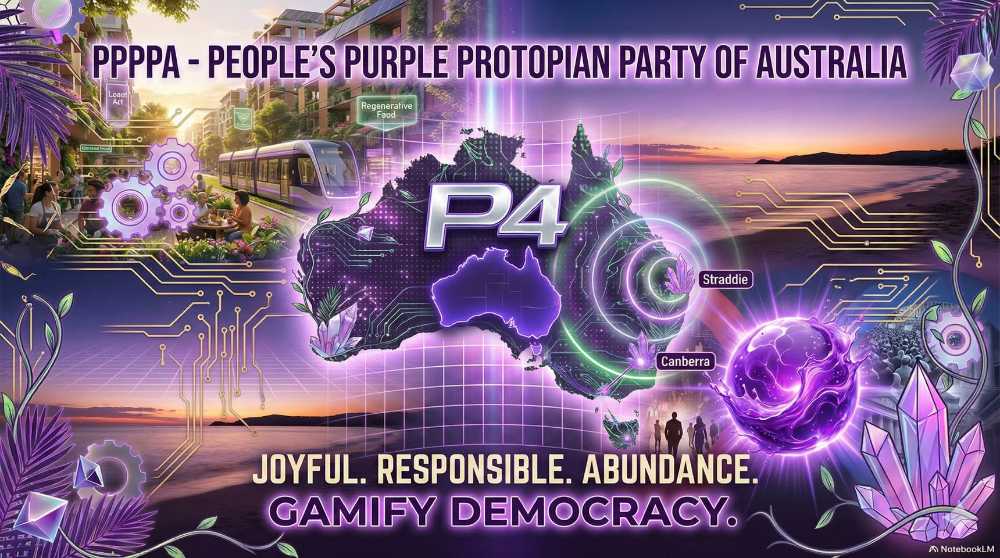

Twinkle series
Short, spicy, everyday clips for the obvious gripes: tolls, food, insurance and work. It is the spark, not the whole system.

Start at the roots
P4A is a national doorway into a grassroots civic build: people, homes, neighbours and local communities shaping useful tools before anyone asks for power.
Clear doors
Each doorway has a different job: public gripes, deeper campaign logic, roots-up architecture, visible support and field readiness.
Short, spicy, everyday clips for the obvious gripes: tolls, food, insurance and work. It is the spark, not the whole system.
The serious rooms underneath: ledgers, public assets, food resilience, law, state portals, constitutions and referendum rehearsal.
The civic pattern starts close to home and scales only where it helps: community first, formal institutions later, with living maps alongside legal maps.
Visible support, merch and culture objects that help fund the work and give people something tangible to rally around.
The practical local organiser kit: market table, signs, QR trails, admin templates, local help table and media basics.
Root system
Start with everyday life, then build outward: neighbour help, local projects, public ledgers, legal clarity, state and national reform, and future coordination only where it earns trust.
People, households and private property stay protected. Public systems should serve this layer, not invade it.
LocalStreets, clubs, co-ops, care circles, community projects and practical help that starts outside the front gate.
MapsLegal boundaries matter, but so do islands, catchments, food bowls, fire zones, coastlines and shared risks.
StatesCurrent power maps, election clocks, chamber splits, histories and state constitution workbenches.
RulesThe rule-writing workbench: member power, candidate guardrails, amendment paths, transparency, overcompliance and democratic checks.
LawActs, common law, council powers, constitutions, citations, version control and human review.
Web3Open data, digital twins, local-first nodes, scientific debate and human review for better shared decisions.
LedgerMoney, time, promises, changes, conflicts, corrections and visible contribution trails.
FieldMarket stall, signage, QR cards, social media, admin templates and local help table.
GearSupport bundles, clothing, stickers, mugs and future deployment materials that make the project tangible.
FutureA national simulator should be fed by local proof, not dropped from the sky as a finished doctrine.

Origin note
We more intended to get across we are two unlike-minded private citizens who had a conversation over a cold one, and postulated... how does one create (with the assistance of the public) a political party in Australia? This political party being truly representative of the nation as a whole, with the maximum amount of input from said nation, whilst being fully transparent and corruption proof.
Politics is already a splash zone and a shit-slinging mockery of honour until we change the system. Less splash, more class means cleaning it up, not pretending it never stank.